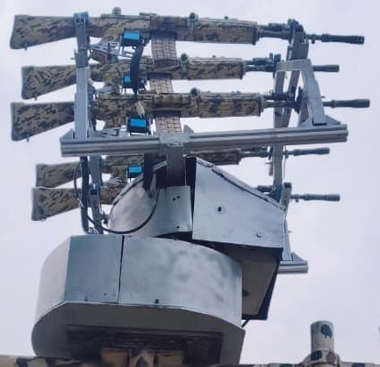
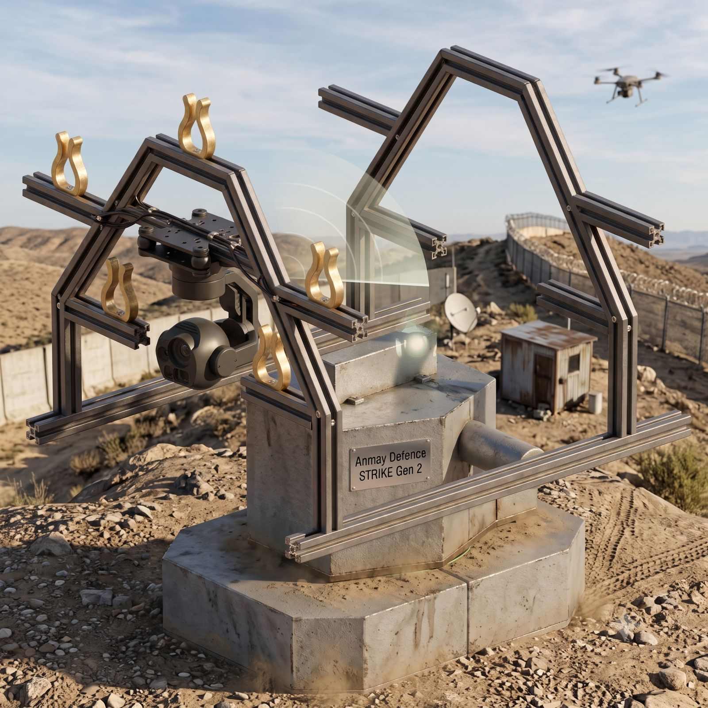
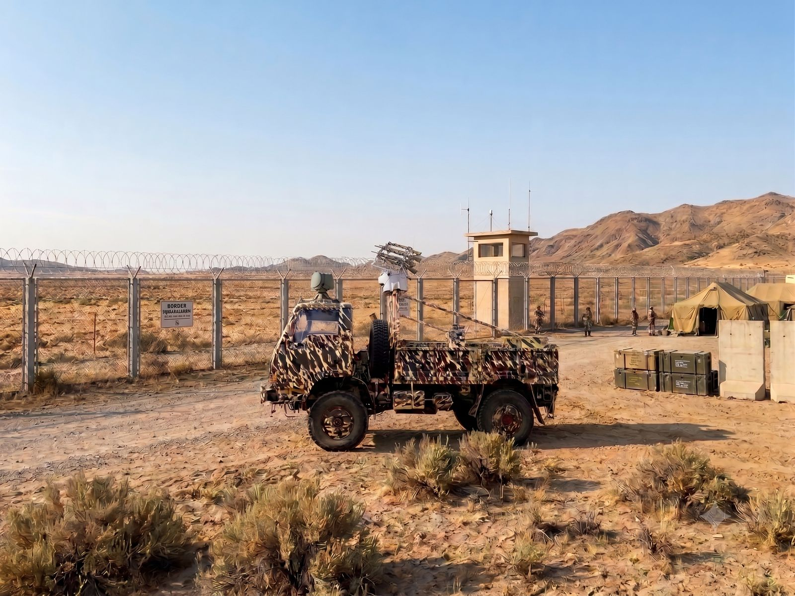
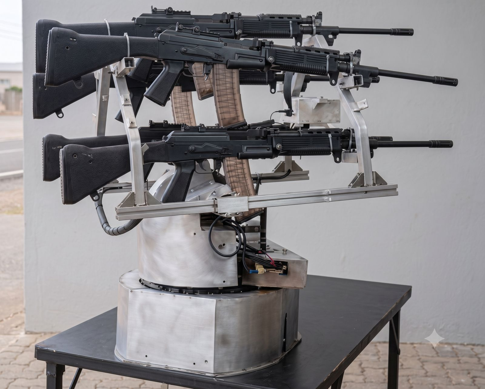
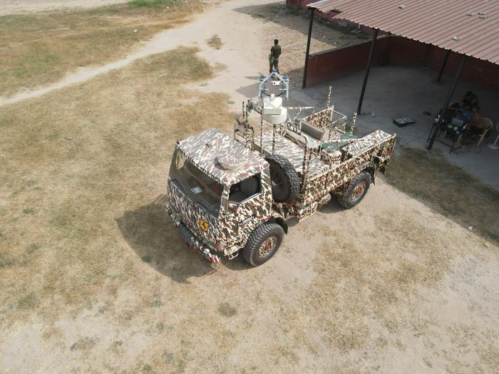
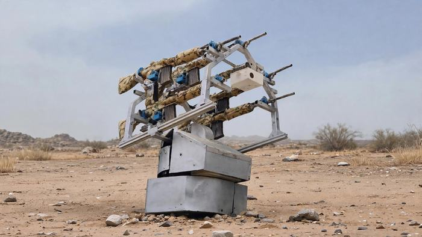
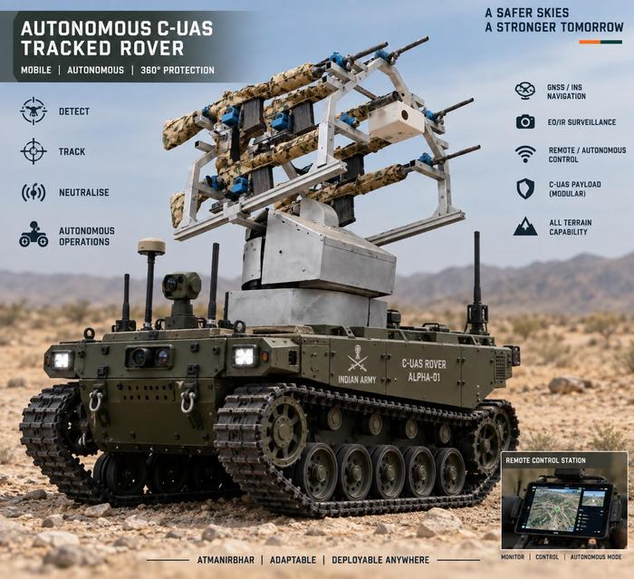

Home / STRIKE
Flagship platform
STRIKE
An AI-powered counter-UAS platform family engineered to detect, track and respond to evolving aerial threats — designed to evolve with the mission.
Gen1 · the foundation
STRIKE Gen1
A rapidly deployable counter-UAS mount: AI-assisted detection and tracking on a 360° azimuth drive with 75° elevation, carrying up to five independently actuated trigger units.
| Detection range | Up to 700 m (Gen1, per programme documents) |
|---|---|
| Rotation | 360° continuous azimuth, stepper-driven |
| Elevation | Up to 75° |
| Trigger units | 5, individually or simultaneously controlled |
| Deployment | Under 10 minutes; vehicle-mounted or static |
| Modes | Automatic tracking · manual joystick control |
| Power | 24 VDC |


Mission packages
One platform, multiple mission configurations
Capability is added around the base platform rather than replacing it.
RF early warning
Detector for control-link activity, with a mobile app interface for the operator.
Optical fibre
Fibre-linked operation where radio silence is required.
Electronic warfare
Soft-kill jamming, stated as effective up to 2 km in the programme documents.
Solar power
Extended endurance for long-dwell positions.
Multi-weapon
Mixed effectors on one mount — see the STRIKE M build below.
Future payloads
Electromagnetic and non-kinetic payloads are studied as future options, not current capability.


Gen2 · layered defence
STRIKE Gen2 concept / in development
Two layers of defence in one architecture: a kinetic layer and an electronic layer, with next-generation sensing and edge processing.
| Layers | 1 — kinetic · 2 — electronic warfare |
|---|---|
| Optics | Day/night PTZ with 30× optical zoom |
| Sensing | Integrated LiDAR, EO/IR |
| Compute | NVIDIA edge AI for detection and tracking |
| Coverage | 360° azimuth / 80° elevation |
| Comms | 2 km wireless video · 5 km fibre |
| Trigger units | 5 independent |
| Deployment | 24 VDC, under 10 minutes |
STRIKE M · multi-weapon
Mixed effectors, one mount
STRIKE M demonstrates the mounting platform carrying dissimilar weapons simultaneously — here two AK-pattern rifles and two belt-fed light machine guns on a fabricated drum base.
- Independent servo actuation per weapon
- Quick-change mounting hardware
- Same 360° azimuth drive and control console as Gen1
- Bench-tested indoors before field fitment

Deployment
Built for multi-domain deployment

Vehicle-mounted
Mast and mount fitted to a 4×4 flatbed; deploy and stow from the bed in under ten minutes.

Static / fixed installation
Plinth or mast-mounted for perimeter protection, with optional radar and sensor packages.

Tracked rover concept
Autonomous ALPHA-01 concept study: the same mount on a tracked unmanned ground vehicle.